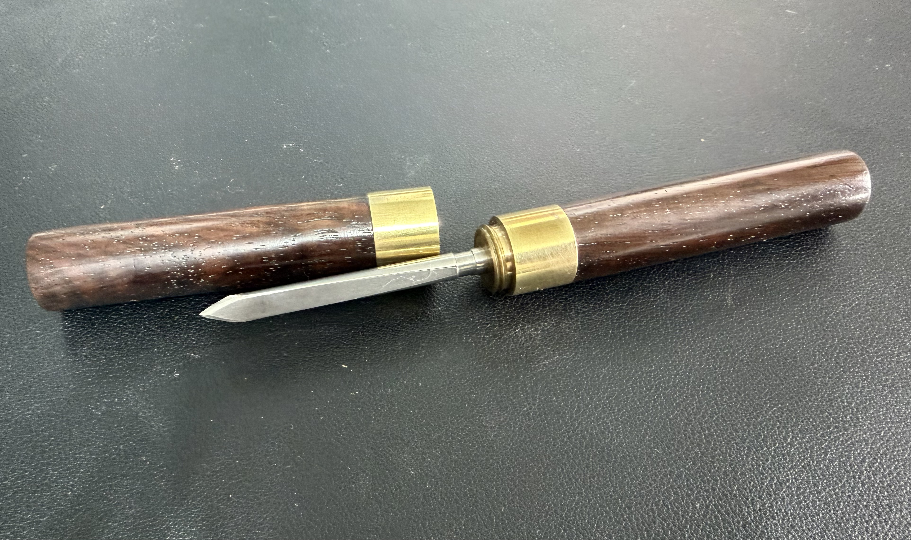

The Bench · Restorations
Things worth bringing back.
Every piece documented start to finish — the find, the problem, the process, the result. Vintage hand tools, knives, and workshop finds restored to working condition.

Multi-Tool
Bridgeport H.M. Corp Interchangeable Tool Handle
Read the full write-up →
Marking
Vintage Awl — Repurposed Marking Knife
Read the full write-up →
Screwdrivers
German "Perfect Handle" Set — Four Graduating Sizes
Read the full write-up →
Screwdrivers
Mac Tools Wooden-Handled Set
Read the full write-up →
Knives
Imperial Steak Knife Set — Six Blades
Read the full write-up →
Knives